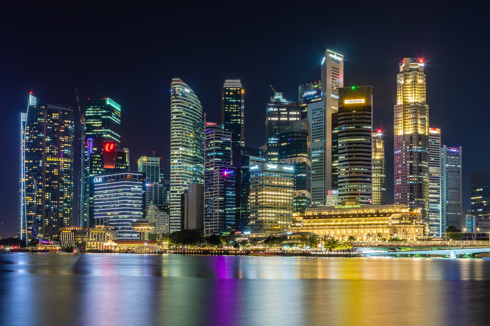
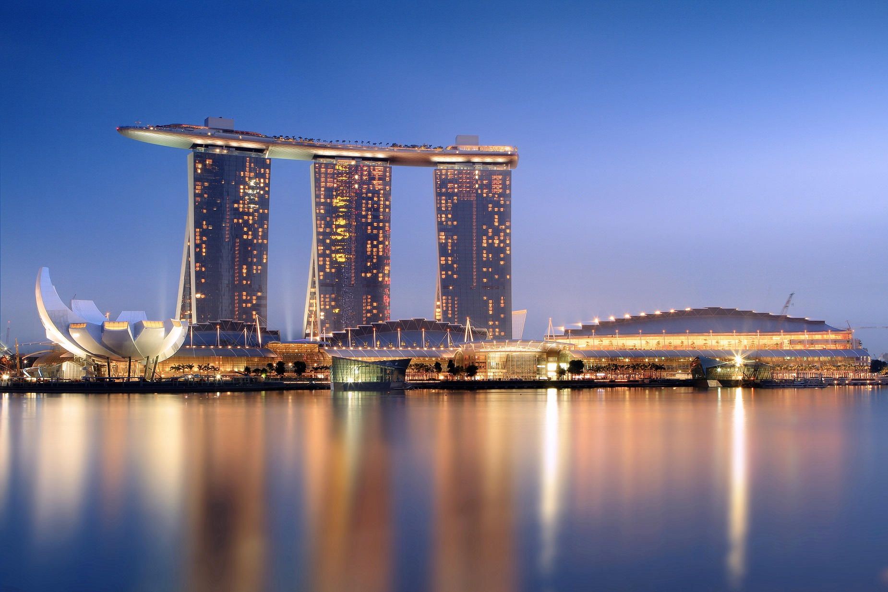
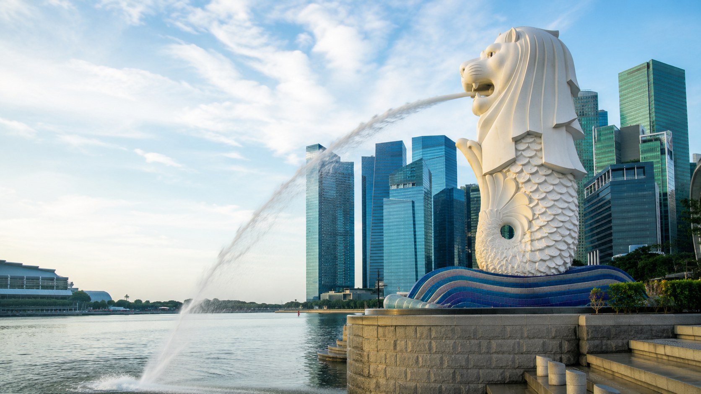
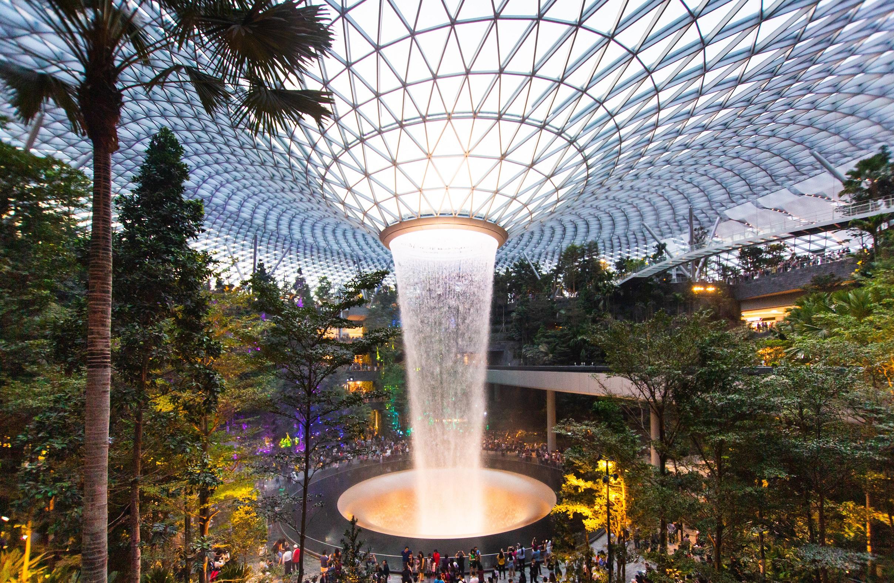
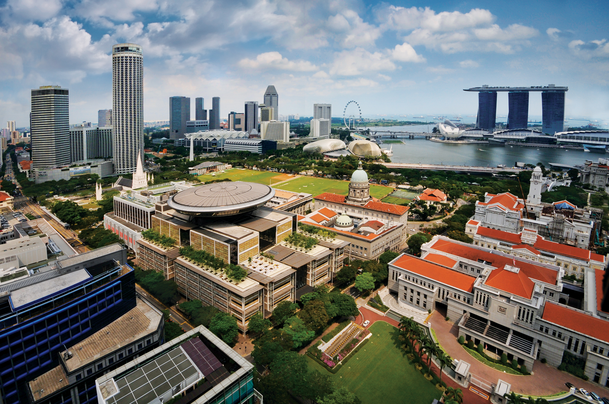

Singapore
Singapore is a vibrant city-state at the crossroads of Asia, known for its distinctive blend of modern architecture, multicultural heritage, lush urban greenery, and diverse food culture. Compact, well-connected, and easy to explore, it offers an ideal setting for IGS 2027 participants to combine research exchange with memorable local experiences.
From Suntec Singapore, attendees are within easy reach of Marina Bay, Gardens by the Bay, the Civic District, museums, waterfront walks, hawker centres, and historic neighbourhoods such as Chinatown, Little India, and Kampong Gelam. Whether you have an evening after the sessions, a free afternoon, or a longer post-conference stay, Singapore offers many accessible options for sightseeing, culture, nature, and dining.
Photo Gallery






Near Suntec and Marina Bay
Marina Bay Waterfront
Walk around the bay for skyline views, evening light shows, and easy access to major attractions.
Gardens by the Bay
Explore Supertree Grove, Cloud Forest, Flower Dome, and scenic evening garden walks.
Singapore Flyer
Visit the observation wheel near Marina Bay, within easy reach of Suntec.
Esplanade and Civic District
Discover concert venues, museums, riverfront walks, and historic civic buildings.
Culture and Food
Hawker Centres
Try local food in casual dining settings such as Lau Pa Sat, Maxwell Food Centre, and Old Airport Road Food Centre.
Chinatown
Explore temples, heritage streets, restaurants, and lively evening walking routes.
Little India
Visit colourful streets, shops, temples, and restaurants in one of Singapore’s most distinctive historic districts.
Kampong Gelam
See Sultan Mosque, Haji Lane, cafés, textile shops, and cultural heritage sites.
Longer Visits
Singapore Botanic Gardens
Visit UNESCO-listed gardens and the National Orchid Garden.
Sentosa
Enjoy beaches, attractions, and resort activities.
National Gallery Singapore
Explore a major Southeast Asian art collection housed in the former Supreme Court and City Hall buildings.
MacRitchie Reservoir
Take nature walks and reservoir trails for an outdoor break from the conference programme.
Practical Tips
- Singapore is hot and humid year-round, so light clothing and water are recommended.
- Credit cards are widely accepted, but some small food stalls may prefer local cashless payments or cash.
- Public transport is reliable and convenient; visitors can use contactless bank cards on many MRT and bus journeys.